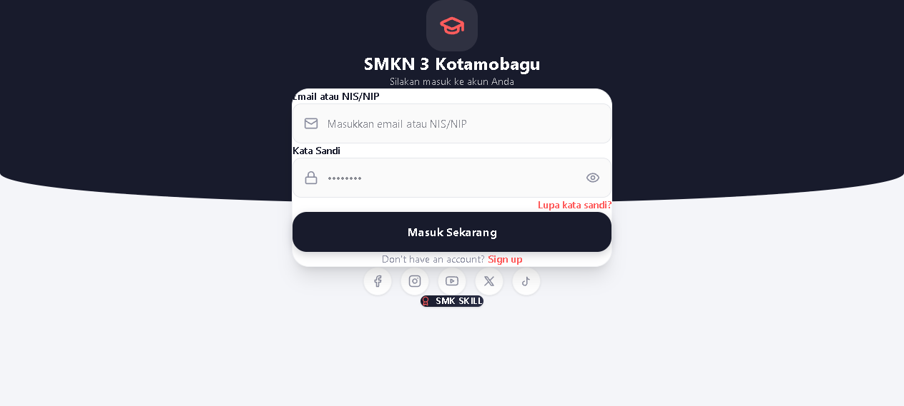
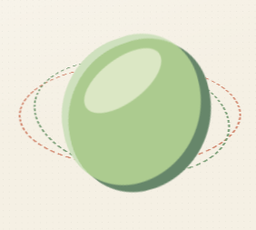
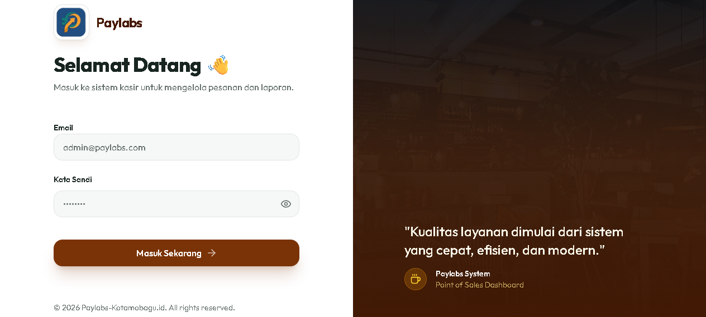
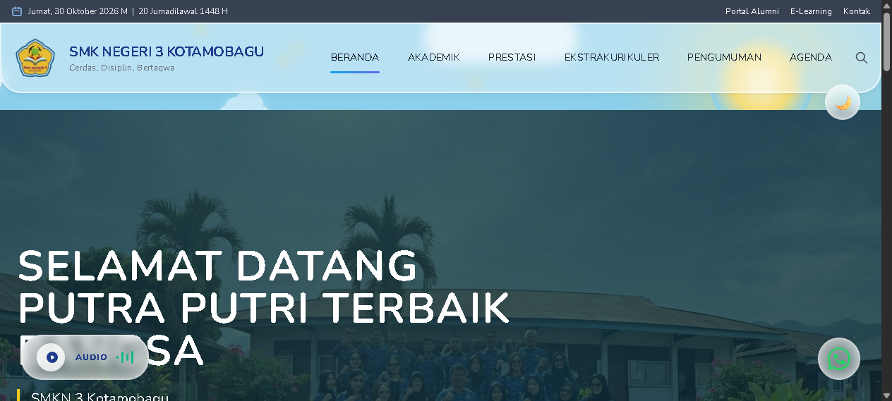

Architecting real systems,
evaluating frontier AI.
Full-Stack Software Engineer & Educator based in Kotamobagu, Indonesia. Experienced in building multi-role production platforms, client-side biometrics, cloud POS, and conducting rigorous AI evaluation & localization for frontier research labs.
Featured Systems in Operation

SMK3 Absensi Digital
1,500+ UsersMulti-role digital attendance ecosystem for SMKN 3 Kotamobagu (Principal, Admin, Teachers, Staff, Students, Parents). Features in-browser biometric face verification (face-api.js), GPS Haversine geofencing, and automated WhatsApp alert gateways.

marry 💍
50+ LanguagesAI-driven global market prospect analyzer for independent digital creators. Estimates international demand, competitor pricing tiers, and generates step-by-step roadmaps across 50+ languages with Ko-fi monetization webhooks.

Paylabs Cafe POS
BOM InventoryIntegrated cloud restaurant suite featuring cashier shift reconciliation, Kitchen Display System (KDS), table QR ordering, driver dispatch, and automated raw material stock deduction based on recipe definitions.

Portal SMKN 3 Kotamobagu
InstitutionalOfficial institutional news and academic publishing portal for SMK Negeri 3 Kotamobagu. Manages announcements, achievements, event calendars, alumni network, and e-learning access with strict administrative audit logging.
Educational Technology (EdTech) & AI Evaluation Specialist
Dual expertise as a Certified Computer Science Educator (14+ years in secondary/vocational education) and Verified AI Agent Evaluator. Skilled in benchmarking autonomous LLM agent trajectories, precision RLHF annotation, and cultural nuance alignment in Indonesian.
Technical Stack & Engineering Skills
Next.js 16 (App Router), React 19, TypeScript, Tailwind CSS v4, Progressive Web Apps (PWA), Expo / React Native, Three.js / WebGL.
Supabase (PostgreSQL), Row-Level Security (RLS), Node.js Express, Laravel (Sanctum), MySQL, SQLite, Server Actions, Vercel Serverless.
face-api.js (Client Biometrics), GPS Haversine, OpenAI & Gemini APIs, WhatsApp Gateways, Thermal Printer APIs, Linux, MikroTik.
Let's Connect & Collaborate
Available for software engineering contracts, AI evaluation, and full-time remote roles.